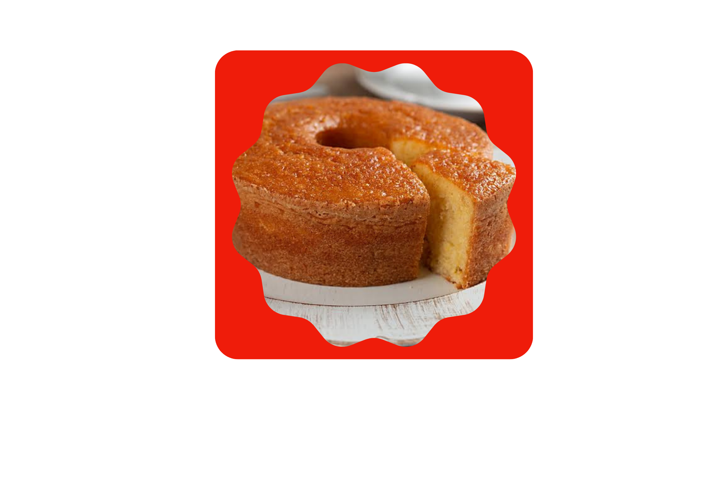
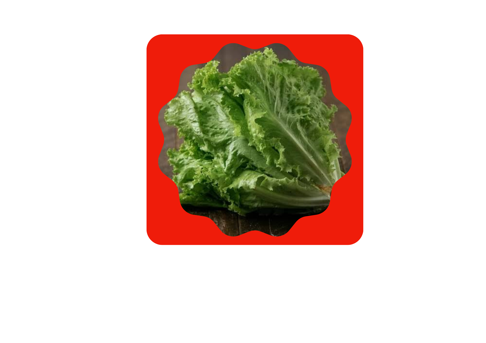

Padaria
Croissaints

Pães caseiros

Bolos caseiros

Receita de bolo de cenoura com cobertura de chocolate
Ingredientes
- 4 Ovos
- 3 cenouras médias
- 1 xícara de açúcar
- 2 xícaras de farinha de trigo
- 1/2 xícara de óleo
- 1 colher de sopa de fermento
Modo de preparo
- Preaqueça o forno a 180°C
- Bata no liquidificador as cenouras, os ovos e o óleo, ate obter uma mistura homogenea
- Em uma tigela misture o acuar, a farinha e o fermento
- Adicione a mistura do liquidificador e mexa bem
- Despeje em uma forma untada e asse por cerca de 40 minutos
Hortifruti
Frutas frescas
Legumes
Verduras

Guia de limpeza e conservação de frutas e Legumes
Passo a passo
- Lave as frutas sempre antes de armazena-las
- Guarde as verduras em sacos plasticos com furos para permitir a circulação do ar
- Mantenha as frutas em temperatura ambiente até amadurecerem; depois, coloque na geladeira
Leite
Queijos variados
Iogurtes
Receita de smoothie refrescante
Ingredientes
- 1 banana madura
- 1 xicara de igourte natural
- 1 colher de sopa de mel
- 1/2 xícara de leite
- Frutas congeladas
Modo de preparo
- Coloque todos os ingredientes no liquidificador
- Bata no liquidificador ate obter uma mistura homogenea
- Depois se sirva